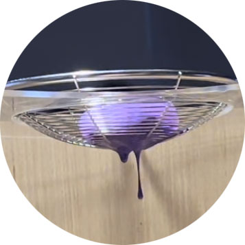
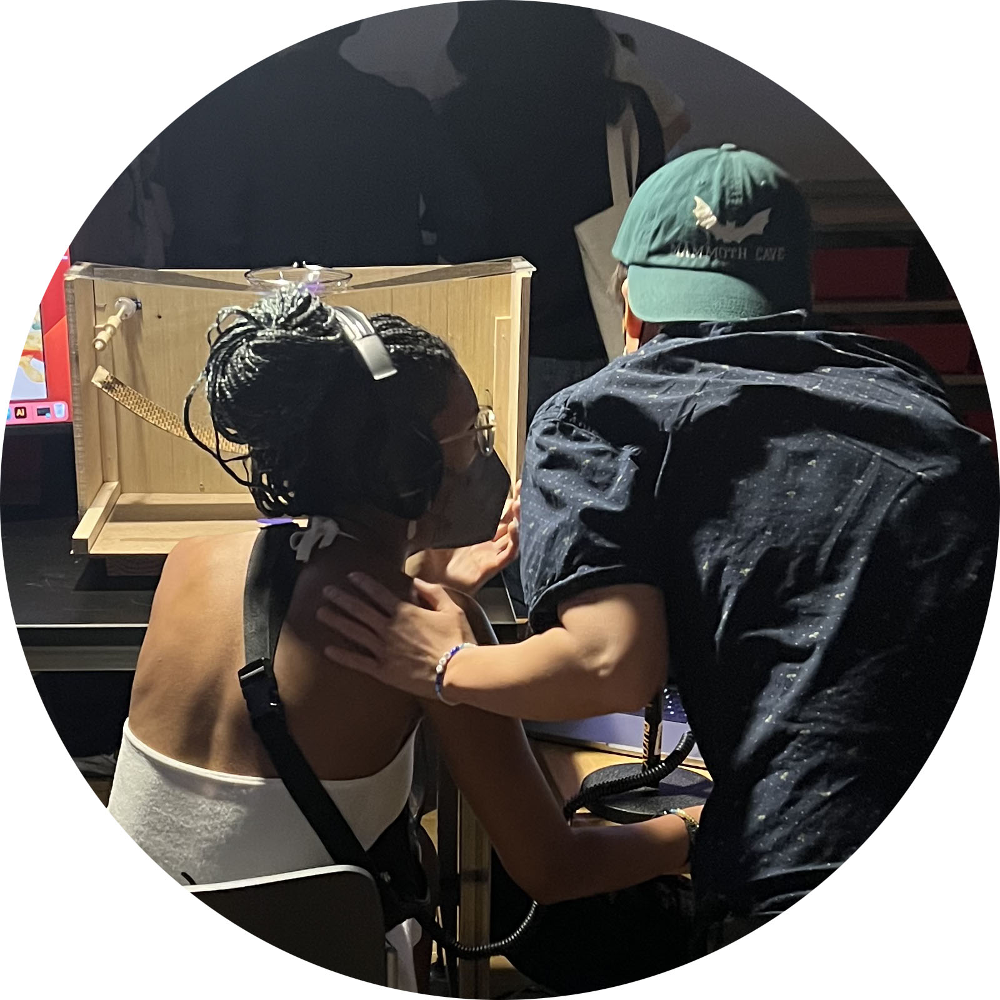
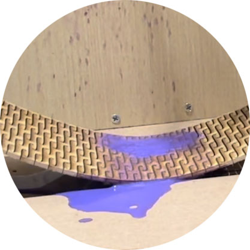

Have you ever experienced a sudden change in perspective that made a difference in how you felt about something?
What caused the change? What emotions stirred as you first started to question how you used to feel?
"Phrase Shift" asked viewers to consider these questions and respond, leaving recorded
messages for the following user to hear. It was a game of telephone about
what locks people into rigid mindsets, how to find flexibility
and what inspires it. Meanwhile a plank of wood
made pliable by repeated curved cuts
hovered nearby, as purple
cubed ice slowly melted
above. A changing
state of matter
slowly drips
drips
drips
drips


